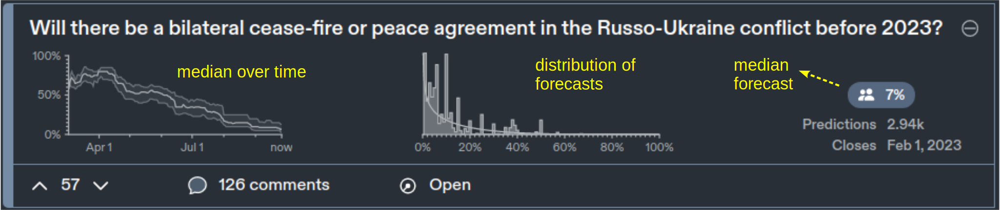

Extracting the collective wisdom in probabilistic judgments
Cem Peker
Erasmus School of Economics, Erasmus University Rotterdam
School of Management, Polytechnic University of Milan
Cem Peker
PhD in Economics (expected 2022, Erasmus School of Economics)
BSc in Industrial Engineering, Bogazici University, Turkey.
Postdoctoral researcher at Polytechnic University of Milan, Italy (Sep 2022 - )
Fields: Decision Theory, Experimental Economics, Behavioral Economics
Research:
- Elicit preferences, beliefs and judgments
- Aggregate judgments for decision making and forecasting ("wisdom of crowds")
Cem Peker
My research on forecast aggregation:
Step 1: A formal (Bayesian) model of judgment formation
Step 2: Incentive mechanism/algorithm to identify experts and combine judgments
Step 3: Test the algorithm in experimental forecasting tasks
Extracting the collective wisdom in probabilistic judgments
Cem Peker
Erasmus School of Economics, Erasmus University Rotterdam
School of Management, Polytechnic University of Milan
Wisdom of Crowds?
An event from Metaculus.com (a community forecasting platform)
Individuals disagree, how should we combine judgments?
Wisdom of Crowds?
An event from Metaculus.com (a community forecasting platform)
Individuals disagree, how should we combine judgments?
Individuals disagree, how should we combine judgments?
Simple averaging is hard to beat (Clemen, 1989; Soll, 2009)

Problem: Shared information
Problem: Shared information
"Linear aggregation problem" (Palley and Soll, 2019; Palley and Satopaa, 2022)
$N$ Bayesian experts, predict unknown probability $\theta$
Common prior $E[\theta] = s$
Each expert $i$ receives an IID, unbiased signal $t_i \equiv (\theta \, \pm \text{error})$
$$ \text{prediction: }x_i = (1-\omega) \,\, \color{orange}{s} \, + \, \omega \,\, \color{orange}{t_i}$$
"Linear aggregation problem" (Palley and Soll, 2019; Palley and Satopaa, 2022)
$Y \in \{0,1\}$: outcome of the event, $\theta = P(Y=1)$
Common prior on $\theta$: $Beta(m s, m(1-s))$
$t_i$: average of $\ell$ independent realizations of $Y$
Posterior belief: $Beta(ms + \ell t_i, m(1-s) + \ell(1-t_i))$ with $$E[\theta | s,t_i] = \frac{m}{m+\ell} s + \frac{\ell}{m+\ell} t_i$$
Let $\omega = \ell/(m+\ell) \,$ and $\, E[\theta | s,t_i] = (1-\omega) \, s + \omega \, t_i$
Simple average of predictions?
$$ \bar{x} = (1-\omega) \,\, \color{orange}{s} \, + \, \omega \,\, \color{orange}{\frac{1}{N} \sum_{i=1}^N t_i} $$
Then, \begin{align} \lim_{N \to \infty} \bar{x} &= (1-\omega) \,\, \color{orange}{s} + \omega \,\, \color{orange}{\theta} \neq \theta \quad \text{ for } \quad s \neq \theta \end{align}
Shared-information problem (Palley and Soll, 2019; Palley and Satopaa, 2022)
A robust aggregation method?
This paper develops the Surprising Overshoot (SO) algorithm.
Elicits and uses meta-beliefs
Prelec et al. (2017), Palley and Soll (2019), Wilkening et al. (2021), Palley and Satopaa (2022)
Meta-belief example:
What is the probability of a ceasefire in Ukraine before 2023?
(prediction)
What is the average probability estimated by the other experts?
(meta-prediction)
Linear predictions and meta-predictions
$$ \text{prediction: } \quad x_i = \underbrace{(1-\omega) \,\, \color{orange}{s}}_\text{shared} \, + \, \underbrace{\omega \,\, \color{orange}{t_i}}_\text{private}$$
$$ \text{meta-prediction: } \quad z_i = (1-\omega) \,\, \color{orange}{s} \, + \, \omega \underbrace{E\left[ \frac{1}{N-1} \sum\limits_{j \neq i} t_j \, \middle\vert \, s,t_i \right]}_\text{Expectation on avg signal of others} \\ $$
For $N \to \infty$...
$$z_i > \bar{x} \iff x_i > \theta$$
Overestimate $\bar{x}$ in meta-prediction $\iff$ Overestimate $\theta$ in prediction
If $\bar{x} = \theta$,
$$z_i > \bar{x} \iff x_i > \bar{x}$$
$x_i$ and $z_i$ are always on the same side of $\bar{x}$
{% of $x_i > \bar{x}$} $ \, = \, $ {% of $z_i > \bar{x}$}
Suppose expert $i$'s meta-prediction overshoots average prediction
$\displaystyle z_i > \bar{x} $
$\displaystyle \color{orange}{(1-\omega) s} + \omega \underbrace{E\left[ \frac{1}{N-1} \sum\limits_{j \neq i} t_j \, \middle\vert \, s,t_i \right]}_\text{Expectation on avg signal of others} > \color{orange}{(1-\omega) s} + \omega \underbrace{\frac{1}{N} \sum_{i=1}^N t_i}_\text{avg signal}$
$\displaystyle \underbrace{E\left[ \theta | s,t_i \right]}_\text{expert $i$'s prediction ($x_i$)} > \underbrace{\frac{1}{N} \sum_{i=1}^N t_i}_\text{converges to $\theta$ for $N \to \infty$}$
For $N \to \infty$...
$$z_i > \bar{x} \iff x_i > \theta$$
{% of $x_i > \bar{x}$} $ \, \neq \, $ {% of $z_i > \bar{x}$}
IMPLIES
$\bar{x} \neq \theta$
* "Overshoot surprise" suggests $\bar{x}$ is an inconsistent estimator.
For $N \to \infty$...
$$z_i > \bar{x} \iff x_i > \theta$$
{% of $x_i > \bar{x}$} $ \, \neq \, $ {% of $z_i > \bar{x}$} *
IMPLIES
$\bar{x} \neq \theta$
* "Overshoot surprise" suggests $\bar{x}$ is an inconsistent estimator.
For $N \to \infty$...
$$z_i > \bar{x} \iff x_i > \theta$$
SO estimator:
1. Calculate $q=$ {% of $z_i < \bar{x}$ in the sample}
2. Pick sample quantile of predictions at $q$
Sample quantile $q \to$ estimates the population quantile of $\theta$
SO estimator
Improvement in accuracy when...
1. $N$ is not very small.
2. High disagreement in predictions (difficult questions).
Evidence from experimental forecasting tasks
1. $N$ is not very small.
Evidence using Study 1 from Palley and Soll (2019).
Subjects guess Prob(Heads) of a biased two-sided coin.
48 coins, 685 subjects
Comparative analysis of forecast errors (SO vs benchmarks)

1. $N$ is not very small.
Average forecast errors, bootstrap crowds of size {10,20,...,100}.
SO estimator has the lowest error in moderate to large samples.

Minimal Pivoting (Palley and Soll, 2019), Knowledge Weighting (Palley and Satopaa, 2022), Meta-Probability Weighting (Martinie et al., 2020)
1. $N$ is not very small.
Average forecast errors, bootstrap crowds of size {10,20,...,100}.
SO estimator has the lowest error in moderate to large samples.
Intuition: Sample quantile converges as $N \to \infty$

Minimal Pivoting (Palley and Soll, 2019), Knowledge Weighting (Palley and Satopaa, 2022), Meta-Probability Weighting (Martinie et al., 2020)
SO algorithm adjusts in the correct direction

Upward bias in the average $\to$ SO estimate $<$ average
Downward bias in the average $\to$ SO estimate $>$ average
SO estimator
Higher improvement in accuracy when...
1. $N$ is not very small. ✓
2. High disagreement in predictions (difficult questions).
2. High disagreement in predictions (difficult questions).
Evidence using data from Wilkening et al. (2021)
"General Knowledge"
"Herbivores eat both plants and animals" (True or False?)
"State Capital"
"Los Angeles is the capital city of California" (True or False?)
- What is the probability that the statement is true?
- What is the average probability estimated by the others?
500 questions, 459 subjects
50 questions, 89 subjects
2. High disagreement in predictions (difficult questions).
Analysis:
1. Categorize questions according to std dev in predictions (= disagreement).
2. Bootstrap samples of questions in each category
3. Calculate Brier scores, 95% Bootstrap conf. intervals (SO vs. each benchmark).
4. Construct 95% Bootstrap confidence intervals (SO vs. each benchmark).
2. High disagreement in predictions (difficult questions).
Box plots: 95% confidence intervals (SO score - benchmark score)
SO algorithm is more accurate than alternatives in high-disagreement questions.
Intuition: Higher dispersion $\implies$ distinct quantiles
2. High disagreement in predictions (difficult questions).
Box plots: 95% confidence intervals (SO score - benchmark score)
SO algorithm is more accurate than alternatives in high-disagreement questions.
Intuition: Higher dispersion $\to$ distinct quantiles
2. High disagreement among experts (difficult questions).

Dashed lines: 30% and 50% quantiles.
SO estimator picks a quantile
More disagreement $\to$ Larger distance between quantiles $\to$ SO estimator can make a big difference
SO estimator
Higher improvement in accuracy when...
1. $N$ is not very small. ✓
2. High disagreement in predictions (difficult questions). ✓
★ Effective in moderate to large samples & difficult questions.
Published paper:
Peker, C. (2022). Extracting the collective wisdom in probabilistic judgments. Theory and Decision. doi: 10.1007/s11238-022-09899-4
Extension in progress:
In practice, most events are not binary
A generalized algorithm for multiple-choice questions?
Question:
Which forecasting tasks may have a strong shared-information bias that favors one outcome?
Questions & Comments?